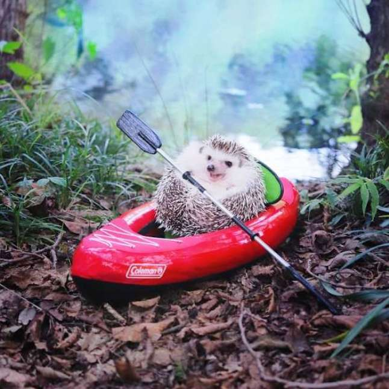

Если вас все достало: коронавирус, удаленка, масочный режим, осенняя слякоть, соседи, коллеги и родные — откройте аккаунт японских ежей в Instagram и нажмите кнопку «подписаться». Вот хозяин чешет колючего питомца под подбородком, а вот он чешет ему пузико. Вот еж в своем маленьком домике, а вот он в палисаднике, полном роз. Еж наряжает елочку, готовится к Хэллоуину. Чувствуете, как повышается окситоцин и нет сил бороться с умилением?
Ежик сплавляется по реке на надувной лодке. Ежик плавает в бассейне на крошечном надувном круге, копает огород, готовится к Хэллоуину. Это не шутка, а повседневная жизнь домашнего ежа из Японии по имени Азуки, его родных и друзей. Колючее семейство стало звездами Instagram и теперь поработает на благо всех собратьев.
Эта крошка — еж Азуки,у него есть дочь Монака и друзья. Они стали звездами Instagram с почти полумиллионом подписчиков благодаря своему хозяину — коммерческому фотографу Шуичи Цунода. Японец снимает своих питомцев в миниатюрных кукольных домиках, с игрушками и придумывает смешные подписи к картинкам. С 2016 года люди по всему миру используют эту страницу как «кавайную перезагрузку», чтобы на время забыть о проблемах во внешнем мире, нырнув в ежиную вселенную.
